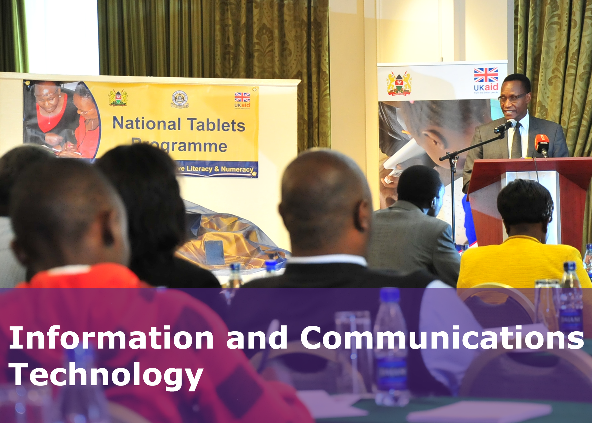
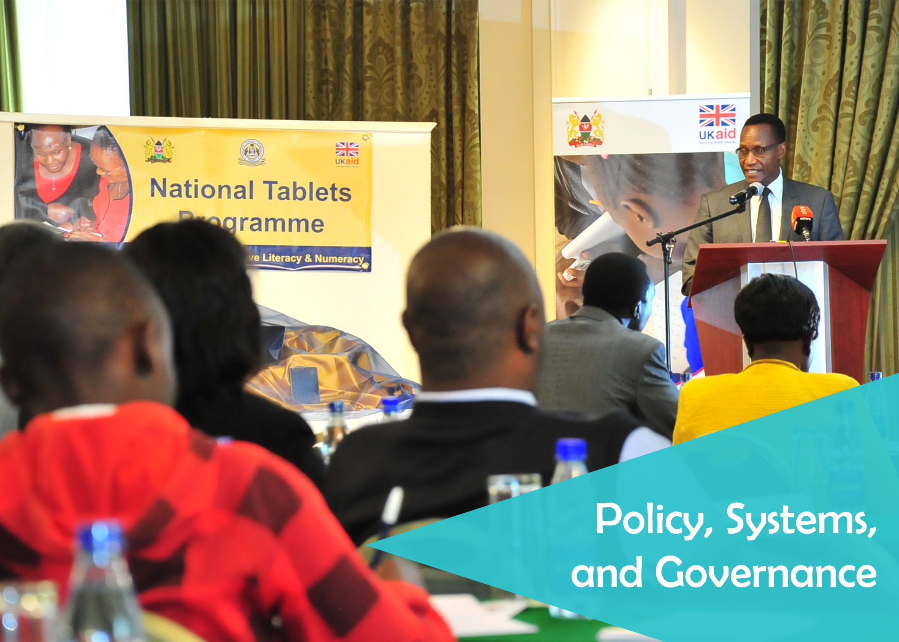
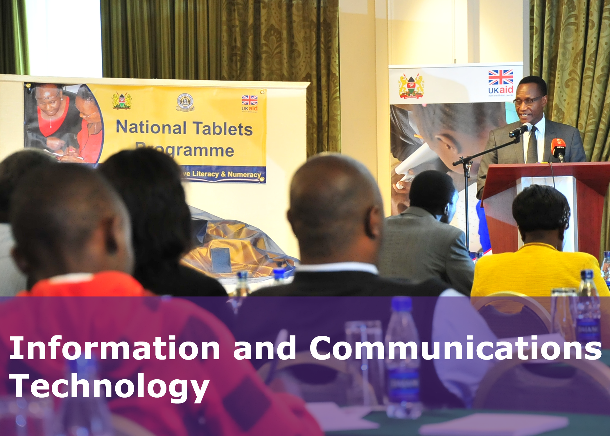
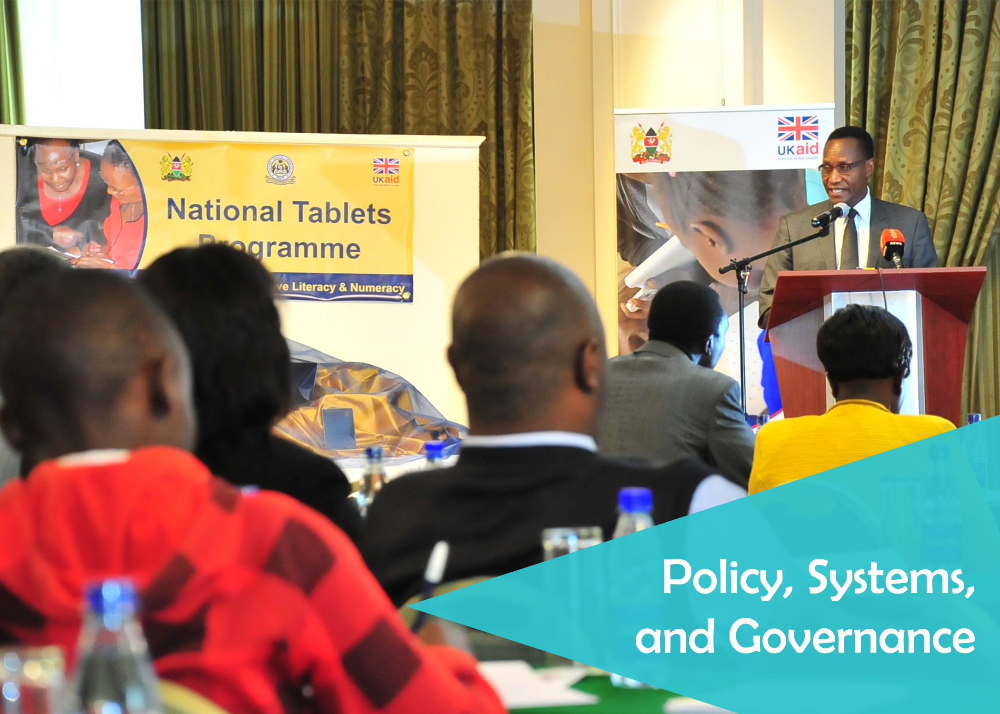

Our Teaching and Learning Program provides expertise in assessing and monitoring student learning outcomes, designing curriculum and materials, training teachers, and building capacity. Our approaches to teaching and learning improvement promote equitable and universal access to quality education, regardless of gender, socioeconomic status, or physical or cognitive barriers.
Our Education Evaluation program applies assessment and survey expertise to inform the design and monitor the implementation of our teaching and learning work, and to help national and local governments, as well as the donor community, measure everything from the state of learning and management in schools to the impact of household and external factors on education
The Information and Communications Technology program works with local partners to design, implement, and evaluate education strategies that use ICT practically and with a focus on supporting management, administration, governance, and quality of education at all levels of the education system.
The Policy, Systems, and Governance Program's experts in education data systems, finance, accountability, decentralization, budgeting, planning, and management help address the challenges governments face in implementing national strategies for improving action.
This systems-level perspective complements the work of our teaching and learning, education evaluation, and information and communications technology (ICT) programs, allowing RTI to confront the challenges of supporting large-scale, sustainable improvements in educational outcomes
TBD